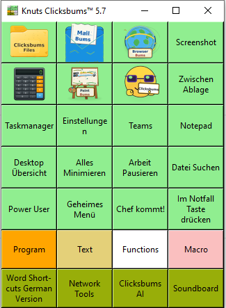
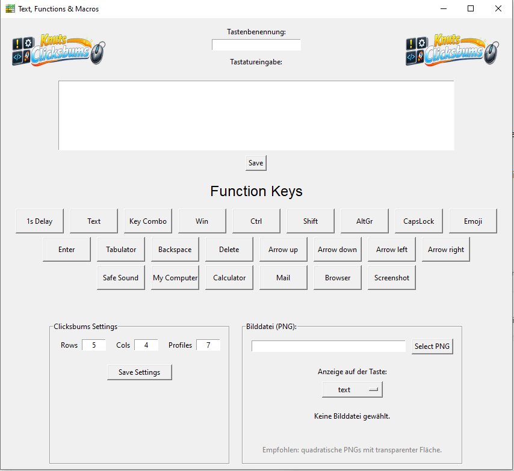
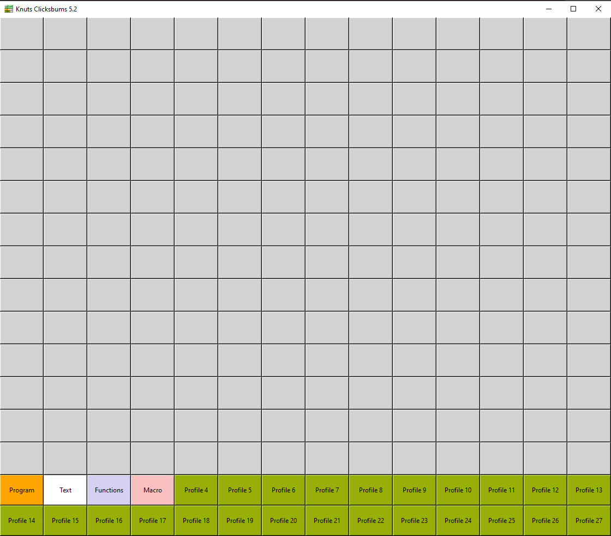
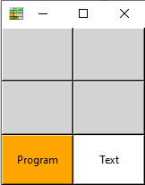

Textbausteine
Wiederkehrende Texte, Signaturen, Adressen oder Standardantworten auf eine Taste legen.
Knuts Clicksbums™ 5.7 · kostenlos · portabel · Windows
Knuts Clicksbums™ ist ein frei konfigurierbares Software-Stream-Deck für Windows. Mit einem Tastendruck kannst du Texte einfügen, Programme starten, Dateien und Ordner öffnen, URLs aufrufen, Fenster aktivieren oder komplette Arbeitsabläufe automatisieren.
Kostenlos · werbe- und trackerfrei · lokal · portabel

„Warum mache ich diesen Schritt eigentlich noch selbst?“
Aus genau dieser Frage ist Clicksbums entstanden. Nicht alles automatisieren – nur den langweiligen Teil.
Eine Werkzeugkiste statt eines Spezialwerkzeugs
Wiederkehrende Texte, Signaturen, Adressen oder Standardantworten auf eine Taste legen.
Programme starten, Dateien und Ordner öffnen, URLs aufrufen, Screenshots erstellen, Windows-Funktionen öffnen und Tastenkombinationen ausführen.
Mehrere Aktionen zu einem Ablauf kombinieren – mit Delays, Fokussteuerung und bewusst eingeplanter Nutzerinteraktion.
Arbeitsbereiche für Text, Makros, Shortcuts, Network Tools, Soundboard oder eigene Ideen organisieren.
Zeilen, Spalten und Profilanzahl anpassen. Vom Mini-Clicksbums bis zur großen Produktivitätszentrale.
Tasten können mit eigenen PNG-Symbolen dargestellt werden. So wird aus der Makrotastatur ein persönliches Cockpit.
So sieht Clicksbums wirklich aus



Version 5.7
Knuts Clicksbums™ 5.7 kann URLs, Dateien, Ordner und Programme direkt über Windows öffnen, Remote-Desktop-Verbindungen starten, neue E-Mails mit Empfänger, CC, Betreff und Text vorbereiten und ein bestimmtes Fenster gezielt aktivieren.
FUNC:OpenURL:https://www.clicksbums.com;
FUNC:OpenPath:C:\Temp\Test.txt;
FUNC:Run:notepad.exe;
FUNC:RDP:PC-123;
FUNC:FocusTitle:Outlook;Beispiel
FUNC:NewMail:team@firma.de|cc@firma.de|Bestellung|Hallo zusammen,\n\nbitte Bestellung prüfen.\n\nDanke!;Wie alles begann
Knuts Clicksbums™ begann aus Neugier: Wie weit kommt man mit KI-gestütztem Vibe Coding, auch ohne klassische Programmierausbildung?
Aus einer einfachen Textbaustein-Tastatur wurde über viele Tests und Versionen ein Windows-Werkzeug für reale Alltagsprobleme. Die Entwicklung war pragmatisch: ausprobieren, testen, verbessern – und nur Funktionen behalten, die wirklich nützlich sind.
Knuts Clicksbums™ 5.7
Die aktuelle Kundenversion enthält die Windows-EXE, Beispielprofile, Sounds, Icons, die README und das vollständige Handbuch.
Windows 10 / 11 · portable · keine klassische Installation
Teaser, Tutorials und weitere Beispiele rund um Knuts Clicksbums™.
Wenn dir Clicksbums Zeit spart und du das Projekt freiwillig unterstützen möchtest, kannst du Knut einen Kaffee ausgeben.
FAQ
Nein. Das Programm ist portabel ausgelegt: Ordner kopieren, EXE starten, fertig.
Nein. Tasten werden direkt in Clicksbums programmiert. Für Makros hilft es nur, den gewünschten Ablauf in einzelne Schritte zu zerlegen.
Ja. Knuts Clicksbums™ wird kostenlos bereitgestellt. Freiwillige Unterstützung ist möglich.
Die Beispiele und Tests beziehen sich primär auf Windows 10 und Windows 11.